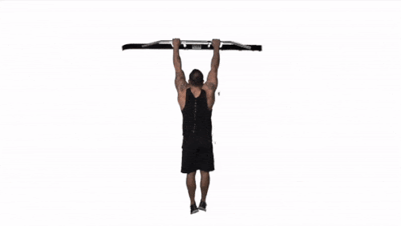
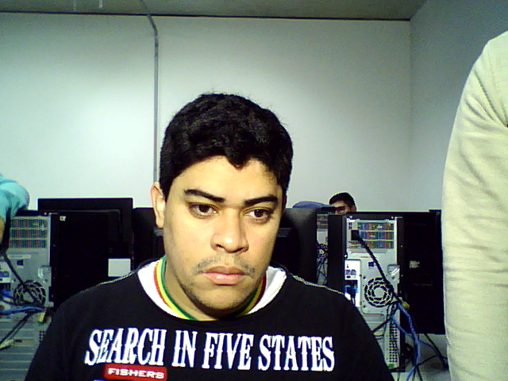
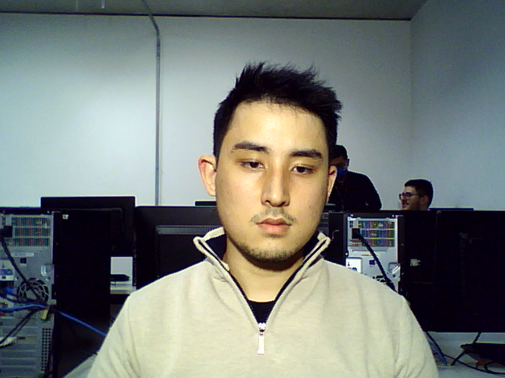
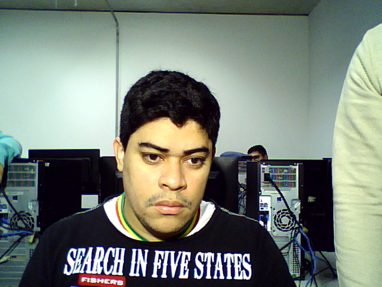
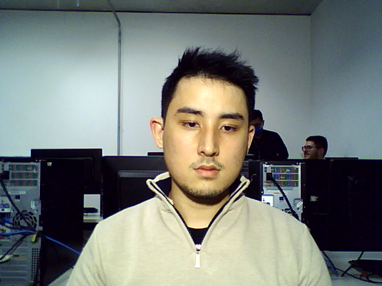

Proposta: Criação de um sistema que detecta a execução do exercício barra fixa. Este exercício é comumente utilizado em teste de aptidão física para concursos, os TAF. A proposta de um programa que analisa e valida a execução do exercício traria vários benefícios. A primeira seria a automatização de um procedimento repetitivo, possibilidade da pessoa realizar remotamente os testes e auxiliar o candidato para se preparar para o teste.

Entrevistado:Ramon Mello, Policial Militar e praticante de crossfit.
Aplicação:Para o desenvolvimento da aplicação será utilizado o python, opencv e seus módulos específicos de detecção de movimento.
Equipamento:Webcam, barra-fixa e algumas marcações para pontos de contraste.
Interação com usuário:O sistema retornaria se a execução do exercício foi correta e a quantidade de repetições executadas em determinado período.
 


